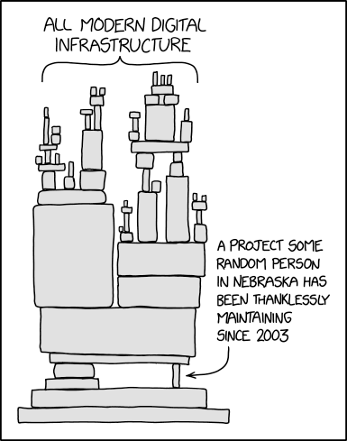
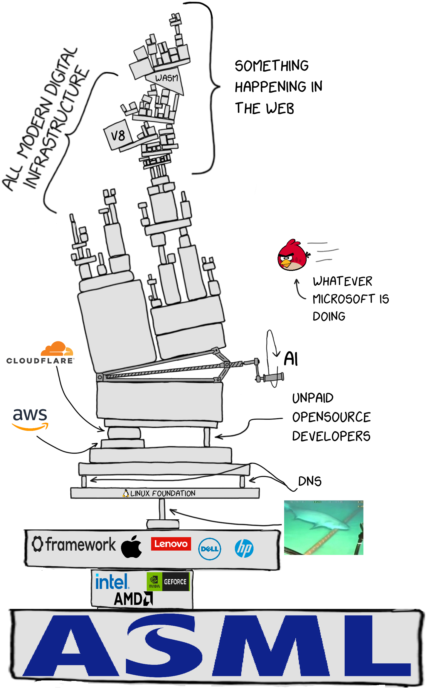

User Support Expectations

Developers and contributors cannot be expected to perform deep investigations into every difficult or unexplained issue. This is due to ecosystem-wide limitations, which are explained on this page.
Introduction

Reasons
Issue |
Elaboration |
|---|---|
Computer hardware and software quality are getting worse, not better. |
|
Complexity is too high and increasing. |
|
Increasing hardware complexity. |
|
We, as Open Source software developers, do not control the hardware. |
|
User and developer freedom in hardware and software is decreasing. |
|
Linux distributions face organizational challenges. |
|
Limited time. |
Consider the following analogy. A popular speaker at a conference is approached by 500 people before their speech. Each individual requests a private discussion of only five minutes. The speaker made a rough calculation; ~500 people multiplied by five minutes equals 2,500 minutes or ~ 41 hours (nearly two days). Clearly it is infeasible for one speaker to accommodate everyone's request for a short discussion. |
Money, funding, and business model issues. |
|
Maintenance. |
|
Ideological differences. |
Examples: |
For example, due to geo-blocking. |
Why Linux Distribution Support Is Limited
Linux distributions typically do not control the whole system, from the hardware and kernel to user space, applications, and the web browser. They depend on thousands of independent upstream projects. An upstream project is the project that originally develops and maintains a software component.
The formal way to describe this is:
We do not have the authority to issue directives.
In plain language:
We are not their boss, and we cannot tell them what to do.
Cooperation between Open Source projects is voluntary. Different projects have their own goals, priorities, requirements, and schedules. Their developers may be volunteers, may experience burnout, or may have limited time because of work, health, family, or other life situations.
Empathy is needed to understand their viewpoint, which may be different from the requirements of a Linux distribution.
This does not mean that Linux distribution developers should control upstream projects. It also does not mean that distribution developers would do a perfect job if they had that authority.
No Linux distribution developer fully understands the entire system.
The system is too large and complex for one person to understand every
component and every interaction. This is elaborated in the
 The
Thirty Million Line
Problem
The
Thirty Million Line
Problem

 video.
video.
What This Means for Users
As a result, a Linux distribution usually cannot offer one unified product for which its developers take responsibility and provide free support from A to Z.
- Support is often a patchwork because different components are maintained by different projects.
- Users may be asked to reproduce an issue and report it to the upstream project responsible for that component. See Generic Bug Reproduction and the Self Support First Policy.
- Issues involving multiple components may be very difficult or impossible to investigate fully.
- Many issues may remain unexplained, especially when developers cannot reproduce them.
- Users need to adjust their expectations accordingly.
Referring users to another project is not intended as finger-pointing. In many cases, only the developers of the affected component have the knowledge and access required to investigate the issue.
Comparison with Commercial Operating Systems
The alternative is often a commercial surveillance capitalism operating system. Such systems may appear more unified because one company controls more of the product.
However, they may not provide free public support forums where developers respond, and their issue trackers may be private. Users may therefore be unable to view existing bug reports, developer discussions, or progress toward a solution.
See Linux User Experience versus Commercial Operating Systems.
Unspecific
This issue is unspecific to Whonix.
For instance, compare this with Qubes OS bug reports related to kernel panics inside Qubes. For example, see #1644. An issue was reported, nobody was able to diagnose it, and it eventually fixed itself after an update to upstream software.
This is not the fault of Qubes OS either. There are too many bugs for it to be humanly possible to track them all down.
Addressing this problem would require ecosystem-wide changes in programming philosophy and behavior. This is explained further in the wiki chapter Too Much Source Code.
Related
Related wiki pages and wiki chapters.